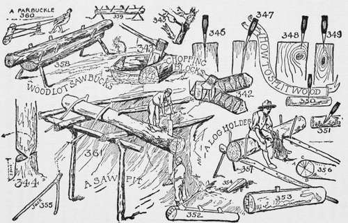

A Sawpit
Description
This section is from the book "The Book Of Camp-Lore And Woodcraft", by Dan Beard. Also available from Amazon: The Book of Camp-Lore and Woodcraft.
A Sawpit
In the olden times, the good old times, when people did things with their own hands, and thus acquired great skill with the use of their hands, boards were sawed out from the logs by placing the log on a scaffolding over a sawpit (Fig. 361)
In the good old times, the slow old times, the safe old times, a house was not built in a week or a month; the timber was well seasoned, well selected, and in many cases such houses are standing to-day! On the next block where I live and from where I am writing, and across the street, there stands a house still occupied which was built in 1661. It is the house that Fox, the Quaker, was quartered in when he was preaching under the spreading oaks on Long Island. The timbers of this house are still sound and strong, although the woodwork in nearby modern houses is decaying.
In the mountains of Kentucky and Tennessee they still use the sawpit, and the logs are held in place by jacks (Fig. 355), which are branches of trees hooked over the log and the longest fork of the branch is then sprung under the supporting cross-piece (Fig. 361).
Of course, the boy readers of this book are not going to be top sawyers or make use of a sawpit; that is a real man's work, a big He man's work, but the boys of to-day should know all these things; it is part of history and they can better understand the history of our own country when they know how laboriously, cheerily and cheerfully their ancestors worked to build their own homesteads, and in the building of their own homesteads they unconsciously built that character of which their descendants are so proud; also they built up a physique that was healthy, and a sturdy body for which their descendants are particularly thankful, because good health and good physique are hereditary, that is, boys, if your parents, your grandparents and your great grandparents were all healthy, wholesome people, you started your life as a healthy, wholesome child.
In this chapter the writer has emphasized the danger of edged tools for beginners, but he did that to make them careful in the use of the axe, not to discourage them in acquiring skill with it. We must remember that there is nothing in life that is not dangerous, and the greatest danger of all is not firearms, is not edged tools, is not wild beasts, is not tornadoes or earthquakes, avalanches or floods, but it is LUXURY; expressed in boy language,it is ice cream,soda water, candy, servants and automobiles; it is everything which tends to make a boy dependent upon others and soft in mind and muscle and to make him a sissy. But hardship, in the sense of undergoing privation and doing hard work like chopping trees and sawing logs, makes a rugged body, a clean, healthy mind, and gives long life. So, boys, don't be afraid to build your own little shack, shanty or shelter, to chop the kindling wood for your mother, to split up logs for the fun of doing it, or just to show that you know how. Don't be afraid to be a real pioneer so that you may grow up to be a real Abe Lincoln!
If I am talking to men, they need no detailed definition of luxury; they know all about it, its cause and its effect; they also know that luxury kills a race and hardship preserves a race. The American boy should be taught to love hardship for hardship's sake, and then the Americans as a race will be a success, and a lasting one.
Continue to: